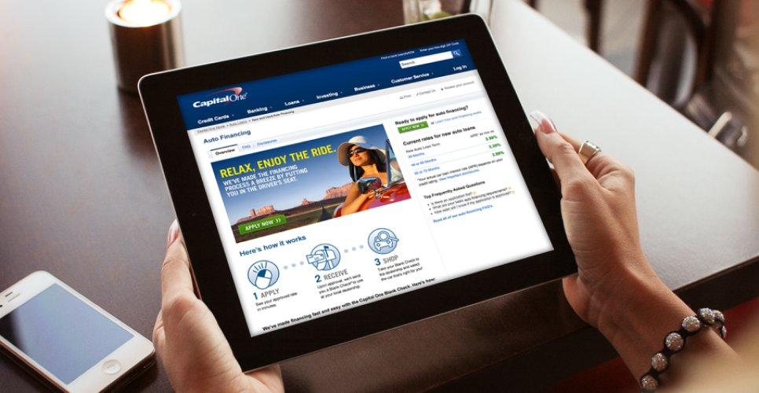
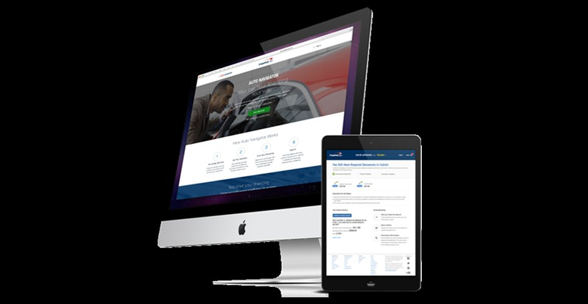

A top U.S. consumer bank needed brand creative leadership and UX/UI for a new auto-lending digital product, and stronger performance from a mature direct-mail channel.
Capital One was standing up a new digital auto-lending product while leaning on a mature direct-mail channel that had plateaued: two very different problems on my desk at once.
I moved between them: brand creative and art direction on one side, hands-on UX/UI for the new product on the other.

A pre-qualification flow that gave shoppers their real terms without the dealer pressure cycle. Capital One sat behind the transaction, not in front of it.

Search dealer inventory by what shoppers actually filtered on: monthly payment, total cost, and term. The interface translated between buyer language and lending language.